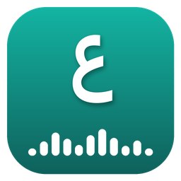

Privacy Policy
Arabic Podcast Studio is an open-source app that runs on your own devices. Your library, transcripts and vocabulary stay on your devices and in your own Google Drive. The only data that ever reaches a service run for the app is what you choose to use with the optional friends & sharing features. This page explains where your data goes when you use each feature.
Data stored on your device
Your podcast subscriptions, episode lists, downloaded audio, transcripts, saved vocabulary, settings and any API keys you enter are stored only on your device, in the app's data folder. Transcription runs entirely on your device. Audio is never uploaded for transcription.
Podcasts
The app downloads podcast RSS feeds and audio directly from the podcast's own servers, as any podcast player does. Those servers see a normal download request from your device.
Google sign-in and Google Drive sync (optional)
If you choose to sign in with Google, the app requests only these permissions:
drive.appdata: access to a private, hidden app folder in your own Google Drive. The app cannot see, read or change any of your other Drive files.openidandemail: to show which Google account is signed in.
The app uses this folder to sync your subscriptions, transcripts, vocabulary, cached word definitions and, if you enable it, compressed copies of transcribed audio between your own devices. This data goes directly between your devices and Google. The developer never has access to it. Google's handling of data in your Drive is covered by Google's Privacy Policy.
You can stop syncing at any time with Sign out in the app's settings, and remove the app's access at myaccount.google.com/permissions. You can delete the app's Drive data from Google Drive's settings (Manage apps → Arabic Podcast Studio → Delete hidden app data).
Arabic Podcast Studio's use and transfer of information received from Google APIs adheres to the Google API Services User Data Policy, including the Limited Use requirements.
Friends, sharing and quizzes (optional)
These features only work if you choose Connect with Google under "Friends & sharing" in the app's settings. They use an online database hosted by Supabase on behalf of the app. When you connect, it stores:
- your Google account's email address and a user ID (to sign you in), and the username you choose. Other users can look up a username to send a friend request; they never see your email address;
- your friend requests and friends;
- messages between you and a friend: text, voice notes (private audio files) and the words or folders you send them. Only the two of you can read them, and they are temporary: a text message is deleted once the other person has seen it and left the chat, a voice note once it has been played, shared words once they are added or dismissed, and anything unopened after 30 days. You can also unsend a message;
- your "What I'm studying" card and note (up to three items, for example a podcast episode title, or a YouTube, Spotify, Apple Music or IMDb link with its title and picture), visible only to your friends. Titles and pictures come from those sites' public link-preview services, and playing a song loads Spotify's or Apple's own player;
- the words in shared folders, visible only to that folder's members;
- invitations to live quizzes. During a live quiz, the questions, answers and scores are passed between the players' devices through Supabase and are not stored.
Your podcasts, transcripts, private vocabulary, notes and API keys are never sent to this service. Quiz questions are written by the AI provider of the player who starts the quiz, using their own API key (see below). You can disconnect any time in settings. To delete your account and everything stored for it, open an issue at the address below and it will be removed.
AI word definitions and quizzes (optional)
If you add your own API key for an AI provider (Anthropic Claude, Google Gemini, OpenAI or xAI Grok) and tap a word, the app sends that word, the sentence it appears in, the neighbouring sentences and the podcast and episode titles to the provider you chose, using your key. When you start a vocabulary quiz, the words in the chosen folder and their saved meanings are sent the same way so the provider can write the answer choices. That provider's privacy policy applies to those requests. No other data is sent, and nothing is sent unless you have added a key.
Analytics and advertising
The app contains no analytics, tracking, advertising or crash-reporting services.
Updates
When you click "Check for updates", the app asks GitHub for the latest release version.
Children
The app does not knowingly collect any personal information from anyone, including children.
Changes and contact
Changes to this policy will be posted on this page. For questions, open an issue at github.com/christiangilkey/arabic-podcast-studio/issues.